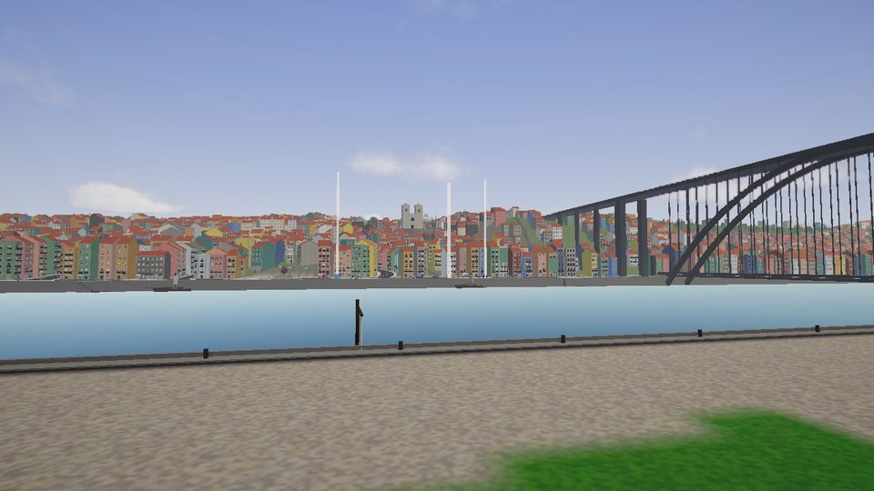

Project Porto
A city that carries on without you
What we're working on

The things people leave behind
The house is being furnished one object at a time, and each one has to survive a torch beam resting on it — because that is the moment a player decides whether anyone ever lived here.
Read it →
The thing in your hand
The radio is the only company you get.

The hall
The first room, and the one that teaches you how far the light reaches.
Jump into Project Porto
An open-world game set in a fictional Porto, from the river to the top of the hill.



The studio
We build from the ground up.
Hordalusa is an independent studio from Portugal. We write our own tools and technology, because owning them is what makes the work our own.
We work at our own pace and show things when they're ready to be seen.
01
Build it to understand it
We'd rather know how something works than only how to use it.
02
Depth over speed
The long route leaves us more to work with.
03
Small and finished
Better to complete something focused than start something vast.
04
Own the tools
No licences, no royalties, no black boxes we can't open.

Talk to us
Press, partnerships or just a hello. We read everything.